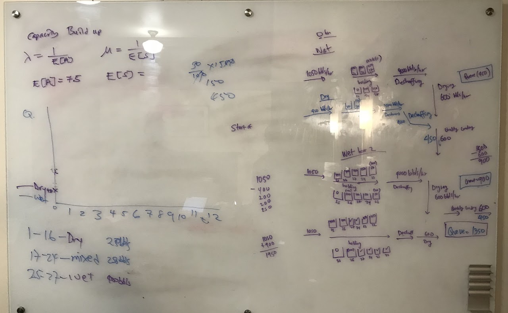

Live → Blog
October 25, 2018

It is not surprising that this is a very stressful time in my life. It is the beginning of my senior year at Stanford and I should be preparing for my next steps after graduation. The only problem is I am as lost about what I want to do for the next few years as I ever was. Maybe lost is not the right word, confused? As I try to separate my own interests and our (my family and community) collective interests, I struggle to define who I am separate from the collective identity. Applying for jobs, staying on top of academics, being a superstar operator for the Stanford Center for Professional Development, being a dependable resident assistant, and volunteering my time to causes I care about, is all stressful! This post is to reflect on some of the high points from this period.
The first highlight, (surprisingly?), is from the joy of collaborative problem solving. Two of my most demanding classes this quarter are MS&E 245A: Investment Science and MS&E 260: Introduction to Operations Management. Maybe in retrospect I should not have taken 75% graduate level classes at this time but I have never been known to do the logical thing. These two classes have a huge collaborative component. The material is both challenging and time consuming, but over the past weeks I have had numerous moments in which my teams and I would, after extensive discussions, understand the problem, model it appropriately, then solve it. Maybe I will be called a nerd for saying this, but there is no greater feeling than when this happens because that is when I feel the smartest. Like a true genius! As I navigate these trying times, the confidence boost from these little moments is needed.
The second highlight is from the communities that hold me, that balance me, and especially that feed me. In recent weeks I have had to reflect on the value of these support systems. Firstly a few weeks ago when I went to a Senior Night event by myself, and realized that life is meant to be a shared experience. It is quite bland otherwise. I know this might seem weird coming from someone who is more introverted than extroverted. The following weekends, I would spend at birthday dinners for some friends I have made during my time here at Stanford. At these dinners I witnessed love and joy, perhaps because of the food but joy nonetheless. I feel a bit sad that I have not been spending as much time with the people I care about because of being busy, but soon I will fix that. I have been blessed with these amazing individuals who get me through days like today. For that I am grateful.
The third and final highlight I want to share is finding my lost passport. Yep! Super organized and especially careful Tumisang Ramarea recently lost his passport. The thing is, I always knew I had lost it in the Airbnb we stayed in during the MCF retreat last month. However, the first time I asked them to check they did not find. It was only a few weeks later that I offered them a $250 reward if they find it and not only did they find it, but they found it exactly where I told them to check: in between the cushions of the couch. I wonder what that says about us as a species! ($250 is still less than the at least $1,000 it would have cost to replace my passport and all the visas in it). In any case, I am grateful to have my passport back. My passport is a physical representation of my freedom. The first thing I did when I got it was to buy a flight home for winter break. Though the stressful time is far from over, I am sure there will always be something to lift my spirits and fill my journals. This period will pass!
← Return to Blog